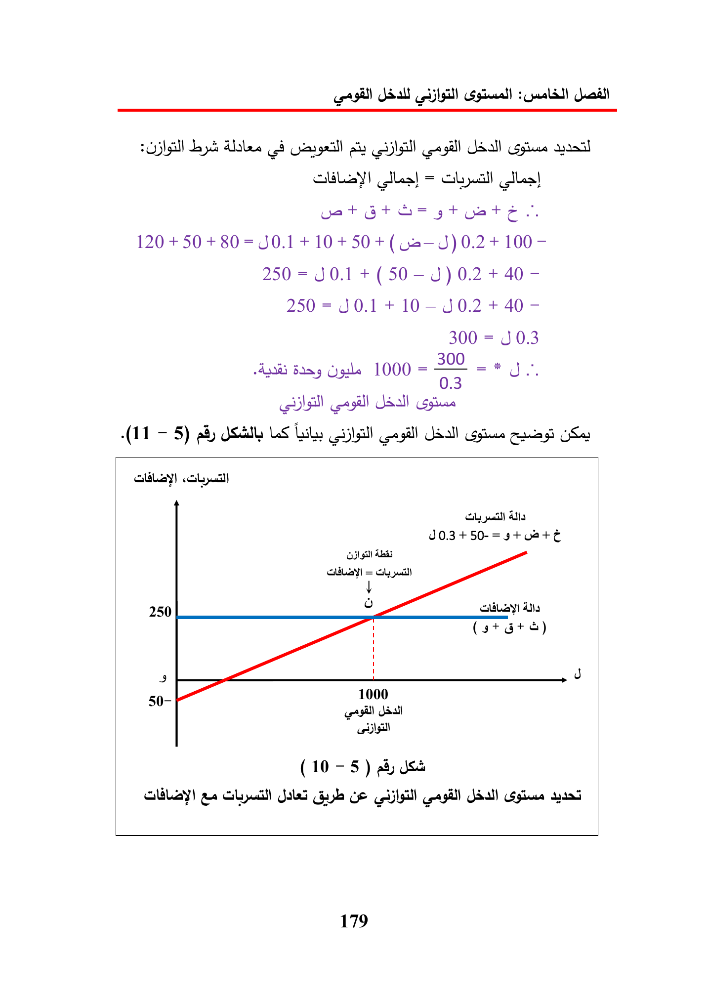

8
ay
alles}
=
vat
120
+
50
+80=J0.1
+
10
+50+(Ga—J)
0.2
+
100-
250
=
+
(50—J)
0.2
+
40
-
250
=
30.1
+
10-J0.2
+
40
-
300
=
J0.3
1000
=
~
=*
(11
5)
LS
tole
spine
ly
pal)
Ata
J0.3+50-=5+
ON
gill
LEY)
=
ly
250
alley)
1000
Sal
50-
(10
-
5)
43
dss
Ge
179